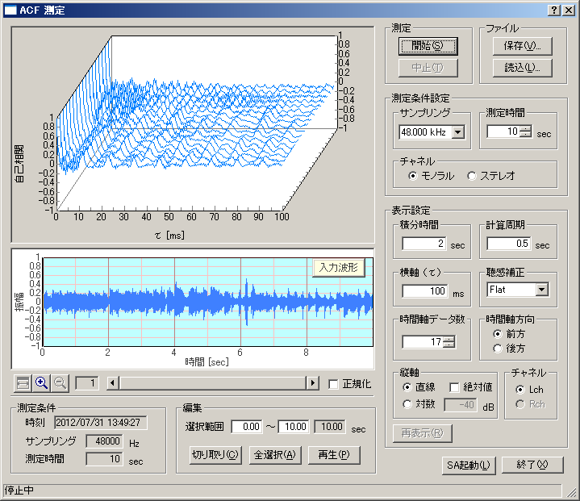

DSSF3 > RA > リファレンス
ACF/CCF測定
- ACF測定画面の説明
- ACF測定/[保存]機能
- ACF測定/[読込]機能

FFT分析が周波数領域で解析を行うのに対して、ランニングACF分析は時間領域での解析を目的にしています。ランニングACFとは、測定対象の音声信号を、[計算周期]で設定した時間だけずらしながら、[積分時間]で設定した時間の範囲でACF（自己相関）を次々に計算して求めたものです。例として上の三次元のグラフでは、[積分時間]が2秒で[計算周期]が0.5秒なので、一番手前の青い線は0?2秒の間のACFを表し、そのひとつ奥の線は、0.5?2.5秒の間のACFを表しています。更にそれ以降も0.5秒ずつずらしながら2秒間のACFが表示されています。
RAではランニングACFの測定と三次元表示、及び測定データのデータベースへの保存を行うことができますが、詳細な解析は音響分析システム(SA)で行います。
DSSF3 > RA > リファレンス